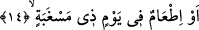

Bazıları köle azad etmenin sadakadan önce getirilmesinin onun sadakadan daha
faziletli olduğuna delâlet ettiğini söylemişlerdir. Nitekim Ebû Hanîfe (r.h.)’ın görüşü
de bu şekildedir. Bir hadîste şöyle buyrulmuştur: “Her kim bir köle azad ederse Allah
o azad edilen kölenin her organına karşılık azad edenin bir organını Cehennem
ateşinden kurtarır.” [108]
Rağıb (Isfahânî) der ki: İnsanın başkasını azaptan kurtarması ancak kendi nefsini
ondan kurtarmaktan sonra olur. Çünkü kendisi hidâyete ermemiş olan bir kimsenin
başkasını hidâyete erdirmesi mümkün değildir. Şu halde köle âzâd etmek insanın kendi
nefsini azad etmesi, kurtarması kabilindendir. Çünkü köle âzâdı insanın kendi nefsini
kurtarmasında büyük rolü olan sâlih amellerdendir.
14. Veya açlık gününde doyurmaktır.
“Veya” kıtlıktan ya da pahallılıktan dolayı “açlık gününde doyurmaktır.”
Râğıb (Isfahânî) der ki: “Sagb” yorgunlukla birlikte olan açlıktır. Bazıları yorgunlukla
birlikte susuzluktur, demişlerdir. “Mesgabe” kelimesi, kezâ “makrebe” ve “metrebe”
kelimeleri mimli masdardır.
“Doyurma” fiilinin “açlık günü” ile kayıtlanması, böyle bir vakitte başkalarına
yardımda bulunmak hem insanın nefsine daha ağır gelmesi ve hem de daha çok ecri
gerektirmesi sebebiyledir.
15. Yakını olan bir yetimi,
Neseb bakımından “yakını olan bir yetimi” doyurmaktır.
Secâvendî yakınlığın akrabalıktan ya da komşuluktan dolayı yakınlık olduğunu
söylemiştir.
Âyette yetim ile onu doyuran kimse arasında neseb yakınlığı olması kaydı
konulmuştur. Çünkü böyle bir yetimde hem yetim olmak hem de akarabalık cihetlerinden
yardıma müstehak olmak toplanmıştır. Şu halde böyle bir yetimi doyurmak, hem
sadakayı hem de sıla-i rahimi içine aldığından daha faziletlidir.